Menos etapas no balcão.
Mais clareza nas entregas.
Este guia explica o atendimento do início ao fim: preparar o pedido, receber uma saída automática no celular, entregar mesmo sem internet e conferir o retorno.
CONFIGURAÇÃO INICIAL: UMA ENTREGA POR SAÍDA
1. Pedido pronto2. Motoboy definido pelo sistema3. Saída confirmada4. Entrega confirmada5. Retorno à loja
O que muda para a dona?
A dona continua aceitando e preparando os pedidos. Quando o pedido estiver embalado, toca em Marcar pronto. O sistema escolhe um motoboy disponível: não é necessário selecionar um nome nem atribuir cada entrega.
O que faz o motoboy?
Inicia o turno, abre a saída que recebeu, confere os pedidos e confirma que está saindo. No cliente, confirma a entrega. Quando voltar, sincroniza e informa o retorno.
Para começar hoje: as saídas automáticas são individuais. O agrupamento por percurso é uma opção avançada, que exige configuração própria. A configuração inicial não muda a taxa já aceita pelo cliente.
As capturas deste guia usam o sistema com dados fictícios em ambiente local. Nomes, números e valores ilustram os botões; não representam pedidos de clientes reais.
- Confira o acesso de cada pessoa.
A equipe entra no painel da loja. Para cadastrar um motoboy, o administrador abre Usuários → Novo usuário, escolhe o perfil Motoboy e informa nome, e-mail e senha inicial (mínimo de 10 caracteres). Cada pessoa usa sua conta; entregue a senha diretamente a ela.
- Deixe o celular conectado na loja.
A primeira entrada, o início de turno e o carregamento de uma nova saída precisam de internet. Use a conexão da loja ou os dados móveis.
- Confira se a distribuição automática está ativa.
Na aba Entregadores, confira a indicação de despacho automático. As configurações avançadas e o controle manual servem para administração e exceções.
- Peça ao motoboy para começar o turno.
Estar cadastrado ou ter feito entregas em outro dia não basta. O início do turno informa que ele está presente e pode receber uma saída.
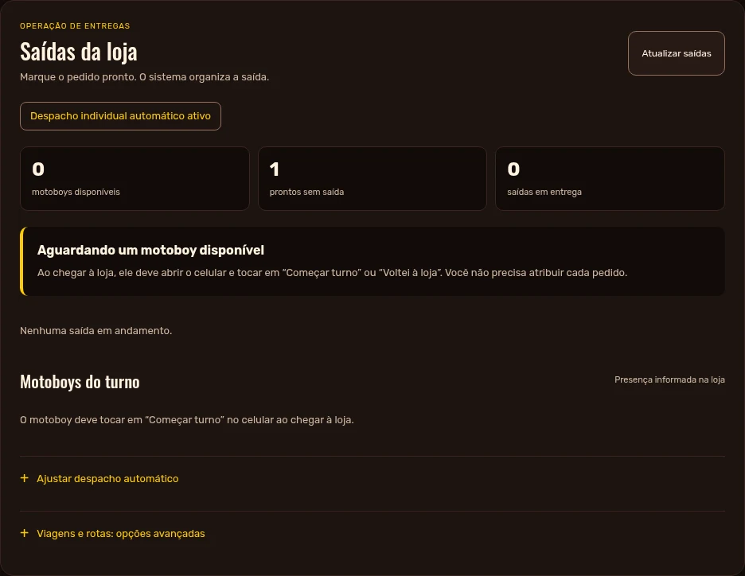
A central da loja mostra o funcionamento automático e as saídas.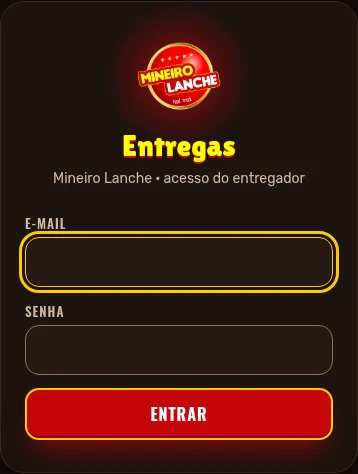
O motoboy entra com o acesso individual que recebeu da loja.Ao ativar a nova operação, declarações antigas de disponibilidade não são aproveitadas. O motoboy deve começar o turno novamente.
- Abra o pedido e confira os dados.
Confira os itens, entrega ou retirada, endereço, total e forma de pagamento.
- Toque em Aceitar e preparar.
Pedidos online precisam da aprovação do pagamento. Pedidos com pagamento na entrega podem seguir com o valor a receber.
- Quando estiver embalado, toque em Marcar pronto.
Faça isso quando o pedido estiver fisicamente pronto para ser levado. Não marque antes apenas para adiantar a fila.
- Acompanhe a indicação na central de entregas.
O sistema definirá o motoboy. Aguarde a atualização automática da tela. Se nenhum estiver disponível, o pedido permanece aguardando, sem marcar uma saída que não aconteceu.
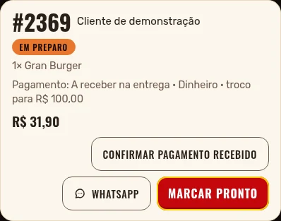
O botão Marcar pronto informa que a embalagem está pronta.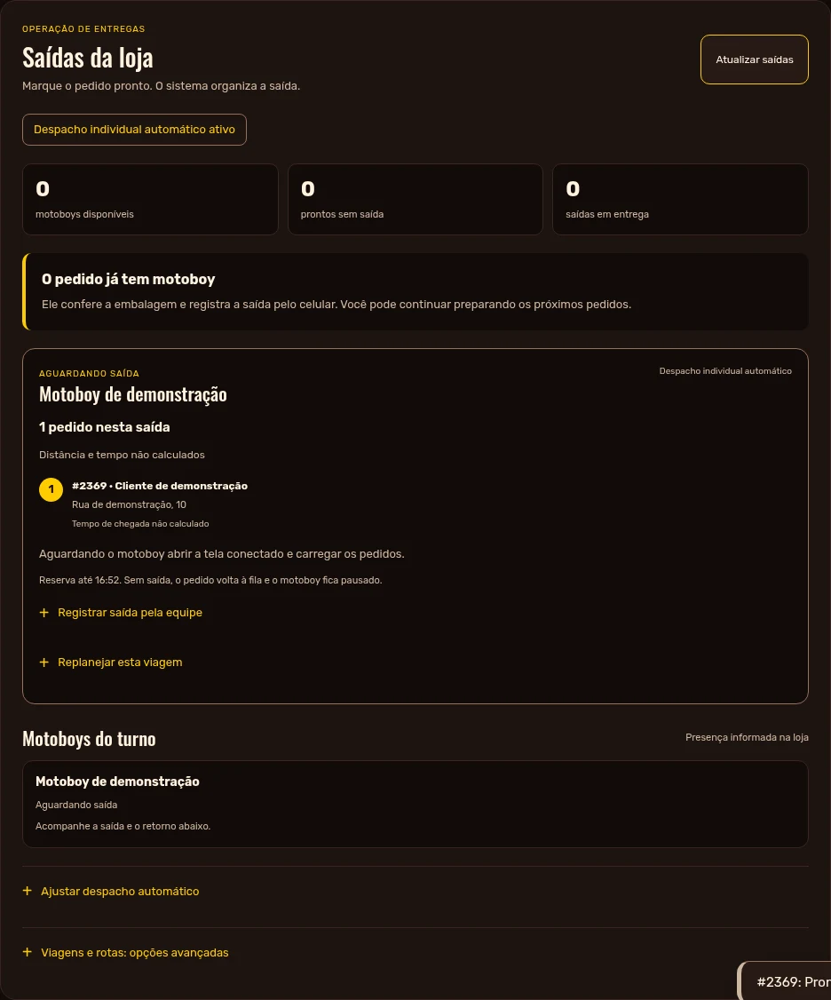
Depois da distribuição, o painel identifica o responsável pela saída.Retirada no local continua sendo retirada na loja. Esses pedidos não entram na distribuição aos motoboys.
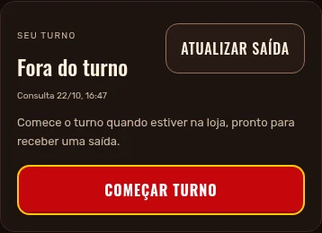
Tela do motoboy antes de começar o turno.- Abra a tela de entregas.
Entre em mineirolanches.store/motoboy/ e use seu próprio acesso.
- Toque em Começar turno.
Faça isso quando estiver na loja e disponível para trabalhar.
- Aguarde sua próxima saída.
O sistema escolhe o entregador disponível. Você não precisa escolher nomes nem selecionar pedidos para assumir.
- Se for parar, use Pausar ou Encerrar turno.
Não deixe sua disponibilidade marcada quando não puder fazer entregas.
Durante a espera, deixar o navegador em segundo plano não deve apagar a presença declarada neste modo. Antes de sair, abra a tela conectado para receber os dados atuais. O guia não depende de notificações com o aplicativo fechado.
O pedido pronto vai para um motoboy disponível.
| Situação | O que acontece |
|---|
| Um disponível | Ele recebe a próxima saída elegível. |
| Vários disponíveis | O sistema considera o tempo de disponibilidade e os critérios de desempate da operação. |
| Nenhum disponível | O pedido continua na fila. Confira se alguém começou o turno ou já voltou de uma saída. |
| Motoboy entregando | Ele não recebe outra saída enquanto estiver com a viagem atual aberta. |
| Todos os pedidos entregues | A viagem passa para retorno. O motoboy ainda precisa informar que voltou à loja. |
Acompanhe a fila e os responsáveis na central de entregas.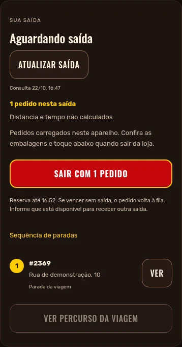
O celular mostra a saída que foi atribuída ao motoboy. Cadastro ativo autoriza o acesso. Ele não informa que o motoboy está presente. O turno e o retorno são declarações reais da operação.
Aguarde a indicação de que os pedidos foram carregados no aparelho.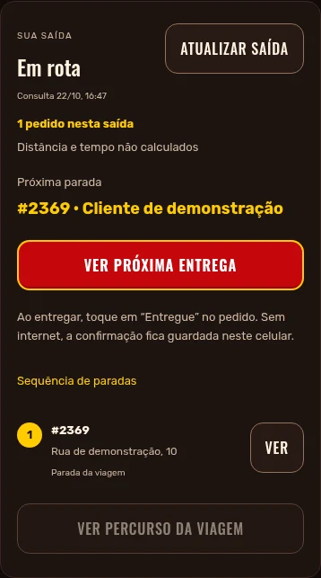
Depois da confirmação de saída, o pedido fica em entrega. A reserva inicial dura 5 minutos. Se vencer antes da saída, atualize a tela e confirme sua disponibilidade novamente. Mesmo com os dados carregados, a saída precisa ser confirmada dentro do prazo.
Antes de tocar em sair
- Confira a comanda e a embalagem.
Os números do pedido no celular e na embalagem devem corresponder.
- Confira o endereço e a cobrança.
Veja se já foi pago online ou se há valor a cobrar. Em dinheiro, confira o troco.
- Aguarde o carregamento dos dados no celular.
Se o botão estiver desabilitado, mantenha a conexão e recarregue a viagem. Não saia apenas porque viu o nome do cliente.
- Toque em Sair com 1 pedido.
Faça isso no momento da saída física. O painel e o acompanhamento do cliente passam a indicar que o pedido está em entrega.
No modo inicial há um pedido por saída. O botão pode indicar a quantidade. Rotas agrupadas, quando configuradas, usam uma confirmação para o conjunto.
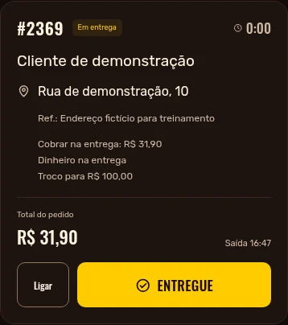
Exemplo de pedido em dinheiro com indicação do troco.- Confira o destinatário e o pedido.
Use as informações carregadas na tela. Se precisar, utilize o contato do cliente disponível no pedido.
- Confira a forma de pagamento.
Se estiver pago no Mercado Pago, não cobre novamente. Se houver valor a receber, confira o total indicado.
- Em dinheiro, confira o troco.
“Troco para R$ 100,00” informa o valor que o cliente pretende entregar. “Sem troco” indica pagamento com valor exato.
- Depois de entregar, toque em Entregue.
A confirmação da entrega e a confirmação financeira são controles separados.
Entregue não significa pagamento conferido pela loja. A dona continua conferindo o valor recebido e registrando o recebimento financeiro no painel.
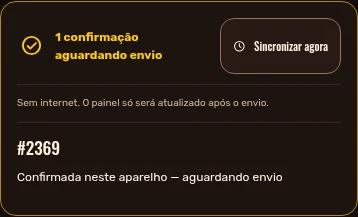
A mensagem de confirmação aguardando envio indica um registro salvo neste aparelho.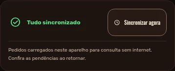
Depois do reconhecimento do servidor, aparece Tudo sincronizado.- Confirme a entrega na tela já carregada.
Sem internet, o aplicativo salva a confirmação no aparelho antes de tentar enviá-la.
- Leia a mensagem exibida.
“Aguardando envio” não significa que o painel da loja já recebeu a confirmação. Na loja, a entrega pode continuar aparecendo em andamento.
- Quando a conexão voltar, abra a tela.
Mantenha a página aberta e use Sincronizar agora se necessário.
- Confira Tudo sincronizado.
Somente depois dessa mensagem considere concluído o envio das pendências.
Não limpe os dados do navegador, não desinstale com limpeza de dados e não troque de conta enquanto houver confirmações pendentes. O envio não é garantido com a página fechada.
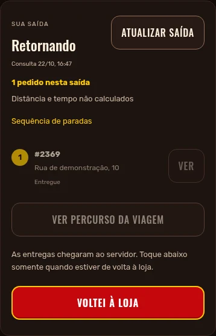
Depois das entregas sincronizadas, registre o retorno físico à loja.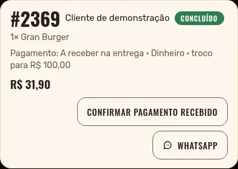
A equipe registra o recebimento do pagamento após conferir o valor.- Abra a tela conectado ao retornar.
Confira se há confirmações aguardando envio e sincronize antes de prosseguir.
- Toque em Voltei à loja.
Faça isso somente quando estiver de volta. Concluir a última entrega não significa ter chegado à loja.
- Confira o dinheiro com a dona.
Separe valores de pedidos pagos online daqueles recebidos na entrega. Informe qualquer diferença ou ocorrência.
- A equipe confirma o pagamento recebido.
No pedido correspondente, use Confirmar pagamento recebido depois da conferência. As taxas de entrega do relatório não são, por si só, um acerto financeiro.
Após o retorno registrado, o sistema pode atribuir a próxima saída. Se for parar de trabalhar, pause ou encerre o turno.
| O que aparece | O que fazer |
|---|
| Pedido aguardando motoboy | Confira se está pronto e se existe motoboy que começou o turno, está na loja e não tem outra viagem aberta. |
| Motoboy voltou, mas não recebe outra saída | Abra a tela conectado, sincronize as entregas e registre Voltei à loja. |
| Botão de saída desabilitado | Aguarde os dados serem carregados. Confira conexão e versão atual da viagem; recarregue. |
| Aguardando envio | A confirmação ainda está no aparelho. Abra a tela conectado e toque em Sincronizar agora. |
| Saída reservada não foi retirada | Confira a situação do motoboy. A reserva inicial dura 5 minutos. Se vencer antes da saída, o processamento automático devolve o pedido à fila e pausa o entregador para conferência. Ele só deve sair com a viagem atual confirmada na tela. |
| Pedido mudou ou foi cancelado | Recarregue e confira com a loja. Não entregue usando uma versão antiga nem confirme de novo para tentar forçar. |
| Precisa corrigir o responsável | Use o controle manual nas exceções antes da saída. Depois de sair, comunique a ocorrência à equipe; não faça uma troca silenciosa. |
| Dinheiro diferente do esperado | Confira pedido, total e troco. Não confirme o recebimento apenas para remover o aviso. |
Se precisar de baixa manual: a equipe deve conferir a entrega e informar um motivo. O histórico precisa preservar quem fez a correção.
Checklist de encerramento
- Todos os pedidos conferidos.
- Celulares mostrando Tudo sincronizado.
- Retornos registrados.
- Valores recebidos conferidos.
- Turnos encerrados de quem parou de trabalhar.
Se a dificuldade persistir, informe o número do pedido e a mensagem da tela ao responsável pelo sistema. Não envie senha, dados de cartão ou chaves de acesso.
A automação mantém os registros para conferência.
- Abra Entregadores no painel.
A parte inicial mostra saídas e presença no turno. Para conferir o histórico, expanda Controle manual e histórico.
- Escolha o período desejado.
Use Hoje, Últimos 7 dias ou Últimos 30 dias. O dia operacional vira às 4h para incluir as entregas da madrugada.
- Confira os indicadores por motoboy.
Veja entregas concluídas, pedidos em aberto e o tempo médio disponível. Abra o histórico de um pedido para conferir atribuição, saída e confirmação.
- Confira pendências com a pessoa responsável.
Uma entrega ainda não sincronizada pode continuar em aberto na loja. Peça ao motoboy para abrir a tela conectado e verificar Tudo sincronizado.
| Indicador | Como interpretar |
|---|
| Concluídas | Confirmações reconhecidas pelo servidor. Uma confirmação offline aparece depois de sincronizar. |
| Tempo médio | Considera registros válidos entre saída e entrega. Baixas manuais e registros antigos sem os dados necessários não servem como medição automática. O relógio do celular pode influenciar o resultado. |
| Taxas de entrega | São os valores dos pedidos vinculados. Não representam automaticamente salário, comissão ou acerto financeiro do motoboy. |
| Última comunicação | Informa contato do aparelho com o sistema. Não é localização por GPS nem prova de presença física. |
Pedidos antigos abertos também contam. Se o motoboy tiver entregas de dias anteriores pendentes, confira o que aconteceu. Sincronize pelo celular ou use a baixa manual com motivo quando a entrega estiver comprovada. Não dê baixa apenas para liberar a fila.
Treinamento rápido: faça uma saída acompanhada com a dona e cada motoboy. Mostre Começar turno, Sair com 1 pedido, Entregue, Tudo sincronizado e Voltei à loja. Confirme que cada pessoa reconhece o número da própria comanda.